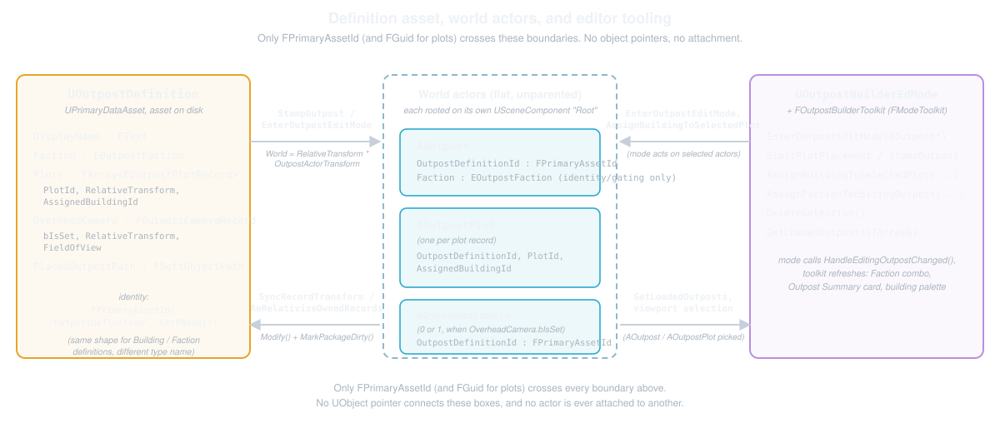

Architecture
This page is meant as a quick reference on the plugin's mental model: how the modules split, what the two definition assets are, and how AOutpost, AOutpostPlot, AOverheadCamera, and AOutpostVolume relate to them without ever attaching to each other.
If you're coming from a typical UE gameplay codebase, the surprising part isn't any single class. It's that the "outpost" as a base never exists as an actor hierarchy. It's a record graph. The actors are just its rendering of that graph.
Module Split: Runtime vs Editor
There are two modules, one runtime/editor pair: OutpostBuilder (runtime, OUTPOSTBUILDER_API) and OutpostBuilderEditor (editor-only, pulling in UnrealEd/Slate/EditorFramework and friends).
A second pair, OutpostUtilities and OutpostEditorUtilities, sat beside them for a while and has since folded back in. Identity sync and companion spawn are in the runtime module now, and the level-registry bake, the five editor listeners and the automation tests are in the editor one.
// OutpostBuilder/Source/OutpostBuilder/OutpostBuilder.Build.cs
public class OutpostBuilder : ModuleRules
{
public OutpostBuilder(ReadOnlyTargetRules Target) : base(Target)
{
// ...
PublicDependencyModuleNames.AddRange(new string[]
{
"Core",
"CoreUObject",
"Engine",
"DeveloperSettings",
"GameplayTags"
});
// ...
}
}
The editor module pulls in everything you'd expect for Slate and asset tooling (UnrealEd, EditorFramework, PropertyEditor, AssetRegistry, AssetTools, ContentBrowser, DeveloperSettings, LevelEditor, ToolMenus) plus a private dependency on OutpostBuilder itself.
Where it gets interesting is the primary-asset scan registration. Your first instinct (mine too) is that scanning /Game for UOutpostDefinition/UOutpostBuildingDefinition assets and registering them with UAssetManager is editor plumbing that belongs in OutpostBuilderEditor.
It doesn't. It lives in the runtime module instead. Since packaged games never load the editor module, they still need the runtime module to resolve the same FPrimaryAssetIds the editor tooling wrote: definition ids to display names, plot records, and building meshes.
The project's shared tunables ride a scanned asset too: UOutpostBuilderSettingsAsset, the plugin's one settings asset, registered as a third scanned type right here so its soft mesh references (EmptyPlotMesh, DefaultPreviewMesh) actually cook. Its per-user counterpart, the config-backed UOutpostBuilderUserSettings, is not an asset and never registers. See Reference for the split.
// OutpostBuilder/Source/OutpostBuilder/Core/OutpostBuilderModule.cpp
void FOutpostBuilderModule::StartupModule()
{
if (UAssetManager::IsInitialized())
{
RegisterAssetScans();
}
else
{
OnPostEngineInitHandle = OutpostBuilder::Module::GetPostEngineInitDelegate().AddRaw(this, &FOutpostBuilderModule::RegisterAssetScans);
}
}
// ...
void FOutpostBuilderModule::RegisterAssetScans()
{
UAssetManager& AssetManager = UAssetManager::Get();
// None of these four types is reached by a cooker dependency edge on its own (FPrimaryAssetId is
// a name pair, not a package reference). Without AlwaysCook, a packaged build silently drops them.
OutpostBuilder::Module::RegisterOutpostAssetType<UOutpostDefinition>(AssetManager);
OutpostBuilder::Module::RegisterOutpostAssetType<UOutpostBuildingDefinition>(AssetManager);
OutpostBuilder::Module::RegisterOutpostAssetType<UOutpostBuilderSettingsAsset>(AssetManager);
// The registry answers for outposts whose level is not loaded, so it has to be cooked and
// resolvable in a packaged game. Without AlwaysCook here it is silently absent in a build.
OutpostBuilder::Module::RegisterOutpostAssetType<UOutpostLevelRegistry>(AssetManager);
UOutpostBuilderSettingsAsset::PreWarm();
}
Each RegisterOutpostAssetType<T> call does two things together, deliberately paired so neither can be forgotten alone: it calls ScanPathsForPrimaryAssets for T under /Game, and it calls SetPrimaryAssetTypeRules with EPrimaryAssetCookRule::AlwaysCook for that same type.
Registering the scan is not enough for a packaged build. None of these packages is reached by a dependency edge the cooker follows on its own: definitions are reached only through FPrimaryAssetId (a name pair, not a package reference), and the settings asset only through UOutpostRuntimeSettings::SettingsAsset, an ini-hosted soft path no cooked package references either. With the default CookRule=Unknown a cooked game silently drops them all (every plot renders the fallback cube, nothing logged).
AlwaysCook force-cooks each package. The cooker then follows the soft mesh refs out of it: BuildingMesh off a building definition, and EmptyPlotMesh/DefaultPreviewMesh off the settings asset, which is what an unassigned plot renders. RegisterAssetScans finishes by pre-warming the configured settings asset (UOutpostBuilderSettingsAsset::PreWarm(), a one-shot sync load) so the never-loading per-frame resolution serves authored values from the first frame of a packaged game.
Note: UAssetManager::IsInitialized() is the guard because module load order isn't guaranteed. If the asset manager isn't up yet, we defer to the post-engine-init delegate instead of assuming StartupModule ran late enough. That delegate itself needed a small shim, since FCoreDelegates::OnPostEngineInit is deprecated in 5.8 in favor of GetOnPostEngineInit(), which doesn't exist pre-5.8:
// OutpostBuilder/Source/OutpostBuilder/Core/OutpostBuilderModule.cpp
namespace OutpostBuilder::Module
{
// FCoreDelegates::OnPostEngineInit (the public member) is deprecated in 5.8 in
// favor of GetOnPostEngineInit(), which does not exist in 5.7.
static FSimpleMulticastDelegate& GetPostEngineInitDelegate()
{
#if UE_VERSION_OLDER_THAN(5, 8, 0)
return FCoreDelegates::OnPostEngineInit;
#else
return FCoreDelegates::GetOnPostEngineInit();
#endif
}
}
The editor module's StartupModule handles the stuff that's actually editor-only. It doesn't register the editor mode, since UOutpostBuilderEdMode is a UEdMode and the asset-editor subsystem discovers it from its own CDO. What it does own:
- A
BeginPIEhook that cancels the mode's in-flight transient sessions, registered module-wide rather than per toolkit. - Watching
OnObjectPropertyChanged. A building-definition edit live-refreshes every loaded plot's building mesh. A definition-asset edit re-syncs the live outpost actor's faction immediately, unique-live-owner only. An edit to the settings asset, or aSettingsAssetrepoint on the hostUOutpostRuntimeSettings, re-scans the configured definition folder, re-realizes every loaded plot's visuals, and refreshes the active toolkit. - Hanging the "Locate/Restore Placed Outpost" entries off the definition asset's Content Browser context menu.
- Scanning the configured
CreatedDefinitionDirectoryfor definitions outside/Game, editor-session only: packaged games still get just the/Gamescans above. - Auto-rebinding placed outpost/plot/camera/volume actors when a definition asset is renamed, through the asset registry's
OnAssetRenamed.
None of that needs to exist in a cooked build, which is exactly why it stays in the editor module.
The Two Definition Assets
Everything placeable is described by a UPrimaryDataAsset with a static const FPrimaryAssetType PrimaryAssetTypeName and an overridden GetPrimaryAssetId(). There are two DEFINITION types (factions are not a definition asset: they're the fixed EOutpostFaction enum, pure identity/eligibility gating); two primary-asset types that are not definitions follow the same identity pattern and ride the same scan/cook registration: UOutpostBuilderSettingsAsset (type name "OutpostBuilderSettings", the plugin's one settings asset) and UOutpostLevelRegistry (type name "OutpostLevelRegistry", one generated registry per level):
UOutpostDefinition- the outpost itself.- A display name, a
Faction(EOutpostFaction, the persistent source of truth for ownership), the set of plot records, the saved outpost-level Overhead camera record (OverheadCamera) plus a per-plot camera map (PlotCameras, keyed byPlotId, see below), and a soft path + world transform back to the placedAOutpostactor. - It also exports
OutpostDisplayName/OutpostPlacedPathasset-registry tags so tooling can list definitions without loading them. Its primary asset type name is"OutpostDefinition".
- A display name, a
UOutpostBuildingDefinition- a placeable building.- Display name, the
BuildingMesha plot renders in GAME worlds (buildings are mesh-only there) and the palette thumbnail source, and aBuildingActorClasskept for a project's own gameplay spawns. BuildingActorClassis also what the EDITOR previews when it's set: the placement ghost and any editor-world plot with this building assigned both mirror the class's template instead of renderingBuildingMesh, which stays the editor-preview fallback for a class-less building.- The two things that decide WHERE it may go: the
PlotSizeQueryit fits and theSupportedFactionsthat field it. - A
BuildingCategorygameplay tag that groups it in the Editing panel's palette only. Empty means uncategorized, with no eligibility effect at all. Seetoolkit.html.
- Display name, the
The PlotSizeQuery is a gameplay-tag query. An empty query, the default for a new building, fits every plot. There is no per-building footprint radius: plot size is the one size concept, and the centimetres live on the project's settings asset (UOutpostBuilderSettingsAsset::PlotSizeTagHalfSizeCm, keyed by tag, resolved through the UOutpostRuntimeSettings statics) where a designer can retune them without touching a building asset.
Both follow the identical identity pattern, which is worth internalizing since you'll see it everywhere in this codebase:
// OutpostBuilder/Source/OutpostBuilder/DataAssets/OutpostDefinition.cpp
const FPrimaryAssetType UOutpostDefinition::PrimaryAssetTypeName(TEXT("OutpostDefinition"));
// ...
FPrimaryAssetId UOutpostDefinition::GetPrimaryAssetId() const
{
return FPrimaryAssetId(PrimaryAssetTypeName, GetFName());
}
FPrimaryAssetId is the currency the whole plugin trades in. Every reference between an outpost, a plot, and a building is an FPrimaryAssetId (or an FGuid for plot identity within one definition, or an FOutpostInstanceId for WHICH placed outpost an actor belongs to, once a definition is reused - see Instance Identity), resolved through UAssetManager::GetPrimaryAssetPath() plus TSoftObjectPtr::LoadSynchronous() when it's actually needed, never a raw UObject* held across a save.
That's what lets a UOutpostBuildingDefinition live anywhere under /Game and still get found by AllowedTypes="OutpostBuildingDefinition" pickers. It's also what a packaged game resolves through the same scan you saw above.
There's no migration system behind any of this. UOutpostDefinition, UOutpostBuildingDefinition, and the settings asset all serialize as ordinary data: no Serialize override, no custom version, no deprecated-field shims. A property the current class no longer declares is simply dropped on load by the engine's own tagged-property serializer, and a property the class has gained since is left at its default.
The one place a plugin path leans on that: an unset plot-size tag resolves as Small everywhere, through OutpostBuilder::PlotSizeTags::ResolveOrDefault, rather than through a one-time conversion step.
The Actor Model: Flat Actors, Records Not Nesting
There are four actor types. The first three share a shape you'll recognize instantly: a bare USceneComponent named "Root" with at most one visual component attached in game worlds; the fourth is a brush volume.
AOutpost- the anchor. CarriesOutpostDefinitionId(whichUOutpostDefinitionit represents) and itsEOutpostFaction Faction, plus an editor-only preview cube (a plain untinted cube; factions have no mesh or color effect at all).AOutpostPlot- one per plot record. CarriesOutpostDefinitionId, its ownPlotId(matching aFOutpostPlotRecord::PlotId),AssignedBuildingId, and a RUNTIMEBuildingMeshComponentthat renders its building in packaged games as well as the editor.- An editor-world plot previewing a class-based building instead mirrors that class's template as one-or-more transient, editor-only parts, so the "at most one visual component" shape above is a game-world guarantee, not an editor-world one. See
MirroredBuildingParts.
- An editor-world plot previewing a class-based building instead mirrors that class's template as one-or-more transient, editor-only parts, so the "at most one visual component" shape above is a game-world guarantee, not an editor-world one. See
AOverheadCamera- zero or one per outpost, total. CarriesOutpostDefinitionIdand aUCameraComponent.UOutpostBuilderEdMode::EnsureOverheadCameraForEditingOutpost()spawns it unconditionally the moment editing an outpost starts, so it always exists while editing regardless of whetherOverheadCamera(or anyPlotCamerasentry) has ever been set.- It's deliberately not
ACameraActor, whose constructor force-enablesbConstrainAspectRatio. We don't want the letterbox. - There is still only ever one of these per outpost. The per-plot camera FRAMINGS (
PlotCameras, above) are data on the definition, not additional camera actors.
AOutpostVolume- the outpost's exclusion fence: an amber-tintedAVolumebrush, any shape, bound to the definition id. Spawned automatically with every new outpost, it blocks OTHER outposts from being placed or stamped within the configured exclusion distance of its extents, never its own definition. It cascades (and undo-restores) with its outpost's delete.
All four also carry an FOutpostInstanceId, which says WHICH placed outpost the actor belongs to. The definition id answers "built from what" and stops being an answer to "which one" as soon as a definition is reused.
The four share no base class, so the property is written out in each header rather than inherited, and that is the single most common source of a sweep that handles three of them and forgets the fourth. See Instance Identity.
None of the four native classes above is hardcoded into a spawn call. UOutpostRuntimeSettings::GetOutpostClass() / GetPlotClass() / GetVolumeClass() / GetOverheadCameraClass() each resolve to the matching TSubclassOf<> a project has configured on UOutpostBuilderSettingsAsset's Actors category, falling back to the plugin's own native class (AOutpost::StaticClass() and its three siblings) when nothing is configured. Never null.
// OutpostBuilder/Source/OutpostBuilder/Settings/OutpostRuntimeSettings.cpp
TSubclassOf<AOutpost> UOutpostRuntimeSettings::GetOutpostClass()
{
if (UClass* Configured = UOutpostBuilderSettingsAsset::Get().OutpostActorClass.Get())
{
return Configured;
}
return AOutpost::StaticClass();
}
Every spawn site routes through the matching resolver instead of StaticClass() directly: editor ghost placement (ConfirmOutpostPlacement/ConfirmPlotPlacement), the Overhead camera spawns (EnsureOverheadCameraForEditingOutpost/StartOverheadCameraPositioning), UOutpostStampLibrary's outpost/plot/camera spawns (StampOutpost/PlaceDefinitionAt/RestoreOutpost all share one helper), OutpostPrefabUtils::SpawnDefaultOutpostVolume, and even the Content Browser drag-stamp entry point (UActorFactoryOutpostPrefab::GetDefaultActorClass, which the engine's own placement path calls ahead of PostSpawnActor).
Fifteen spawn sites across both modules, one resolver each, plus two ActorFactory overrides that resolve GetOutpostClass directly. A project drops in a C++ or Blueprint subclass of any of the four actor types and it's what gets spawned everywhere at once, with no call site to hunt down. TSubclassOf<Base> is what keeps every existing Cast<AOutpost> / Cast<AOutpostPlot> valid regardless of which subclass actually got spawned. A subclass is still an is-a.
IMPORTANT: none of these actors are ever attached to each other. UChildActorComponent is banned outright in this plugin. A plot doesn't sit under its outpost in the outliner hierarchy. It's a sibling actor in the world that happens to carry the same identity: the same OutpostInstanceId where there is one, and the same OutpostDefinitionId otherwise.
The relationship lives entirely in data: the UOutpostDefinition asset's Plots array records each plot's RelativeTransform. World position is computed as RelativeTransform * OutpostActorTransform at spawn and stamp time.
Why go to that trouble instead of just parenting a plot to its outpost, which would give you free relative-transform tracking for nothing? A couple reasons stacked up during the research pass:
- Attachment couples the actors' lifetimes and their transforms in a way this plugin doesn't want. Moving the outpost anchor should not drag plots around with it. Designers move a whole base by multi-selecting, not by moving one root and letting children follow.
- The actors carry state (
FPrimaryAssetIds,FGuids, faction visuals) that doesn't survive the engine's existing "pack a hierarchy into one thing" tools.- The research pass into
APackedLevelActorfound that its own class doc admits non-mesh components are unsupported and result in an incomplete pack. - Level Instances, meanwhile, are built around a
.umapper instance rather than per-plot logic actors. - Neither fits actors whose entire job is carrying identity and state, not geometry.
- The research pass into
- A shared, resolvable id is strictly more flexible than a pointer or an attachment. Any plot in the level can find its outpost by scanning for a matching identity, and
AOutpostPlot::FindOwningOutpostActor()leans on exactly that lookup.
That last point is worth seeing in code, since it's the load-bearing lookup behind every record write-back:
// OutpostBuilder/Source/OutpostBuilder/Actors/OutpostPlot.cpp
AOutpost* AOutpostPlot::FindOwningOutpostActor() const
{
// Unique-or-null: ambiguous ownership means callers skip rather than act on the wrong outpost.
return FindOwningOutpostForIdentity(GetWorld(), *this);
}
Read that comment's parenthetical as historical. Two outposts sharing a definition started out as something a designer had to do by hand, and it became the supported case the moment definitions were allowed to be reused.
Ownership questions now prefer an instance id and fall back to the definition only when there isn't one, through ForEachFamilyActorOfIdentity and its siblings. The unique-or-null shape above is unchanged and still correct for a definition-keyed lookup: it is the fail-closed half of the same rule. Instance Identity covers what replaced the other half.
The scan itself lives in a shared template, since plots, cameras and the outposts themselves all need the same question answered about the same id. It's duck-typed on GetOutpostDefinitionId() rather than expressed as an interface or a base class. That's deliberate, because giving these actors a common base is exactly the coupling the flat-actor model is avoiding:
// OutpostBuilder/Source/OutpostBuilder/Core/OutpostActorQuery.h
template <class T>
T* FindUniqueActorForDefinition(UWorld* World, const FPrimaryAssetId& DefinitionId, bool* bOutAmbiguous = nullptr)
{
if (bOutAmbiguous)
{
*bOutAmbiguous = false;
}
if (!World || !DefinitionId.IsValid())
{
return nullptr;
}
T* Unique = nullptr;
for (TActorIterator<T> It(World); It; ++It)
{
if (*It && It->GetOutpostDefinitionId() == DefinitionId)
{
if (Unique)
{
if (bOutAmbiguous)
{
*bOutAmbiguous = true;
}
return nullptr;
}
Unique = *It;
}
}
return Unique;
}
Note: ownership resolution here is id equality, not a pointer walk up an attachment chain. That's the whole records-not-nesting law in one lookup. Relationships are found by scanning for a matching id, not by asking a scene component who its parent is.
Ambiguity fails closed: two outposts carrying one id yields nullptr rather than an arbitrary pick, and the optional bOutAmbiguous out-param lets a caller tell "nobody owns this" from "too many claim to" when it needs to warn.
Its siblings in the same header are FindFirstActorForDefinition (first match, no ambiguity rule, for display-ish uses like the ownership-beam owner lookup) and HasOtherActorSharingDefinition (the guard record write-backs use before trusting themselves as the owner). Both are the same scan under different ambiguity policies.
Records are also stored against a unit-scale basis, not the anchor's raw transform: AOutpost::GetRecordBasisTransform() returns the anchor's rotation and translation with scale forced to unit, so a designer who scales the outpost actor up in the viewport doesn't distort every stamped plot and camera underneath it. See prefabs.html's "Relative-Transform Math and the Unit-Scale Basis" for the full derivation and the compose/invert helper pair.
Everything that writes a relative transform composes against this basis. A plot move triggers OutpostBuilder::ActorEditing::SyncRecordTransform(), which AOutpostPlot::PostEditMove(true) and PostEditChangeChainProperty each reach through a one-line forward, since typed Details-panel edits never fire PostEditMove.
An anchor move triggers OutpostBuilder::ActorEditing::ReRelativizeOwnedRecords() the same way, forwarded from AOutpost::PostEditMove(true), which walks every matching plot and camera and recomputes their records against the new anchor - but only while the definition is private to this one placement.
Share the template and the sweep refuses outright, including when the sibling it refuses for is a registry-known placement in an unloaded cell or another map, because for a shared template the per-instance data lives on the actors and in the bake rather than in the records. World positions stay exactly where they were. Only the stored relative transform catches up.
The sweep also re-relativizes every entry in UOutpostDefinition::PlotCameras. That's the one record here with no live actor to read a ground-truth transform from, so its pre-move world transform is instead reconstructed by composing against the OLD basis (recovered from the definition's PlacedOutpostTransform, read before this same function overwrites it with the anchor's new transform).
One consequence is asymmetric with the plot/camera actors above: moving a PLOT does NOT move its saved PlotCameras entry, only moving the OUTPOST anchor does. That's a known, accepted limitation (see toolkit.html/edmode.html).
This logic, along with the rest of AOutpost and AOutpostPlot's editor-only behavior (cascade delete, import-identity handling, the mirrored-building preview), lives in OutpostBuilder/Core/OutpostActorEditingLibrary.h, as free functions in OutpostBuilder::ActorEditing taking the actor as their first parameter rather than as methods on the actor classes. Two constraints put it there.
PostEditMove,Destroyed,PostEditImport, and their siblings areUObjectvirtual overrides, and a virtual override can't move out of the class it overrides, which is whyOutpost.cpp/OutpostPlot.cppstill carry a one-line forward for each.AOutpost/AOutpostPlotlive in the runtime module,OutpostBuilder, because a packaged game still has to spawn and simulate them with no editor module loaded, while the runtime module can't itself linkOutpostBuilderEditorto borrow its help.
The whole editing-library file is wrapped in #if WITH_EDITOR, so despite sitting in the module that ships, none of it survives into a cooked build.
Plots intentionally don't follow the anchor: moving it re-relativizes their records without moving them.
Stamping runs the same formula in the other direction: the file-local SpawnPlotsAndCameraFromDefinition helper (shared by StampOutpost, PlaceDefinitionAt, and RestoreOutpost) composes each record against Outpost->GetRecordBasisTransform() to spawn actors from a definition, exactly inverting the write-back. You'll see the code on the prefab page, where it's the mechanism behind fork-on-stamp.
For this page, the important part is just that it's the same shape as the write-back: World = RelativeTransform * OutpostActorTransform, read in one direction to spawn actors from a definition and in the other to keep the definition in sync with actors a designer just dragged around. Neither direction is written inline anywhere: ComposeRecordWorldTransform / MakeRecordRelativeTransform (Outpost.h, alongside GetRecordBasisTransform) are the only place the multiply direction lives.
The Runtime Function Library
It lives in the runtime module (a UBlueprintFunctionLibrary, BlueprintCallable), so game code can call it from a packaged build with no editor module loaded.
UOutpostStampLibrary turns a definition into world actors, through four entry points:
StampOutpost(Definition, TargetTransform, OptionalAnchor)spawns an outpost plus its plots and Overhead camera (when set) fromDefinition, using the sameComposeRecordWorldTransformcomposition shown above. WhenOptionalAnchoris supplied its own transform is the target andTargetTransformis ignored.PlaceDefinitionAtis the non-forking counterpart used by interactive "Edit (Place Actor)" placement: it spawns anAOutpostbound to the same definition id (no fork) at an arbitrary transform and writesPlacedOutpostPath/PlacedOutpostTransformback onto it.RestoreOutpost(editor-only) re-attaches that same definition at its recordedPlacedOutpostTransformafter its actors were deleted.RestoreOutpostFromBaked- the primary restore path now - rebuilds one placement from its baked registry entry under the RECORDED instance id rather than minting a fresh one, which is what makes it work for a shared definition.
All four are distinct from StampOutpost's fork-on-stamp behavior. Only StampOutpost mints a new definition per placement. The others intentionally keep one definition per outpost, and legacy RestoreOutpost now runs only as a gated fallback for content deleted before the registry existed.
There used to be a second library here, UOutpostLoadoutLibrary, a runtime faction-loadout mechanism. It's gone: plots render their own building through a runtime mesh component now, and faction no longer chooses which building a plot shows. The full story of what the old model offered that the new one deliberately doesn't is on the per-plot building rendering page (runtime-loadout.html).
Data Flow
Here's how the definition asset, the world actors, and the editor mode/toolkit talk to each other:

For an interactive version of this whole picture (every module, asset, and actor on one screen, with click-to-inspect contracts and six selectable flows), see the System Wiring map. For why these particular technologies were chosen over the alternatives, and what each one costs, see Technology & Trade-offs.
The editor mode (UOutpostBuilderEdMode) and its toolkit are the only things that touch both sides directly. EnterOutpostEditMode(AOutpost*) gets or creates the outpost's UOutpostDefinition. Actions like AssignBuildingToSelectedPlot write through both the selected AOutpostPlot actor and the matching record in one transaction.
The toolkit's Overview list, meanwhile, starts from the asset registry (definition assets plus their frozen tags) and then resolves each row's placement state against a single world pass over live AOutpost actors - which also splits a shared definition into one row per live placement - plus the level registry, for placements in unloaded cells or other maps and for restorable ghosts. A designer can still jump to bases in maps that aren't even open.
The mode also draws its own viewport feedback every frame it's active: footprint rings, selection markers, ownership beams, labels, HUD readouts. That drawing is split in two layers.
OutpostBuilder::Draw (OutpostBuilderDraw.cpp) gathers the Outpost-specific state behind each draw call, and hands the actual geometry off to OutpostBuilder::DrawPrimitives (OutpostDrawPrimitives.h/.cpp): segments, rectangles, wire squares, rings, pulsed beams, and screen text, with zero Outpost types anywhere in it. Nothing down there knows what an outpost is, on purpose, so any other editor tool in the project can link against the same primitive vocabulary.
We'll get into the state machine and the Slate side of that on the UEdMode deep-dive page and the toolkit page. For this page, the thing to take away is that the mode never holds its own copy of outpost state. It always goes through the same FPrimaryAssetId lookups and the same record-basis math you just saw.
References
- Engine source -
Engine/Source/Runtime/Engine/Classes/Engine/DataAsset.h(UPrimaryDataAsset,FPrimaryAssetId,FPrimaryAssetType), relative to the UE 5.8 install. - Engine source -
Engine/Source/Runtime/Engine/Classes/Engine/AssetManager.h(UAssetManager::ScanPathsForPrimaryAssets,GetPrimaryAssetPath). - Engine source -
Engine/Source/Runtime/Engine/Public/EngineUtils.h(TActorIterator). - Repo -
OutpostBuilder/Source/OutpostBuilder/OutpostBuilder.Build.cs,OutpostBuilder/Source/OutpostBuilderEditor/OutpostBuilderEditor.Build.cs. - Repo -
OutpostBuilder/Source/OutpostBuilder/Core/OutpostBuilderModule.cpp,OutpostBuilder/Source/OutpostBuilderEditor/OutpostBuilderEditorModule.cpp. - Repo -
OutpostBuilder/Source/OutpostBuilder/DataAssets/OutpostDefinition.h,OutpostBuildingDefinition.h,OutpostFaction.h,OutpostRuntimeSettings.h,OutpostBuilderSettingsAsset.h,Outpost.h,OutpostPlot.h,OverheadCamera.h,OutpostVolume.h. - Repo -
OutpostBuilder/Source/OutpostBuilder/Actors/Outpost.cpp,OutpostPlot.cpp,OutpostStampLibrary.cpp,OutpostDefinition.cpp. - Repo -
OutpostBuilder/Source/OutpostBuilder/Core/OutpostStampLibrary.h,OutpostActorQuery.h(the shared definition-id lookups),OutpostActorEditingLibrary.h/.cpp(the actors' editor-only logic, as free functions). - Repo -
OutpostBuilder/Source/OutpostBuilderEditor/Mode/OutpostBuilderDraw.h/.cpp,OutpostDrawPrimitives.h/.cpp(the viewport draw layer and its zero-Outpost-type primitive vocabulary). - docs/runtime-loadout.md - per-plot building rendering (the mesh resolution ladder, plus the porter notes on the removed loadout library and the retired per-plot randomizer).
- research/07-prefab-mechanisms.md - the Level Instance and Packed Level Actor scouting behind the flat-actor decision.
- research/08-v04-design-synthesis.md - the relative-transform record design.